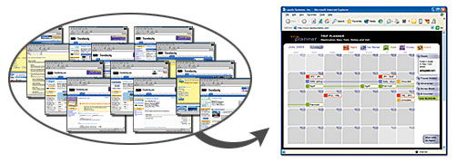
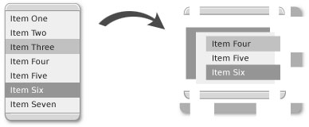
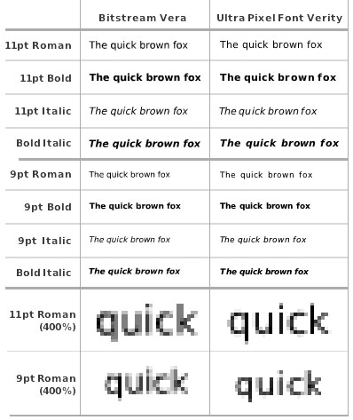

This chapter discusses the OpenLaszlo platform from the point of view of the designer. We'll discuss OpenLaszlo's ability to support designers and engineers in building innovative Internet applications.
With OpenLaszlo technology, web appllication designers are freed from the familiar limitations of static, linear, page-based task flow. Your visions of dynamic, data-driven, concise and intelligent UI can become a reality. But you may need to change your thinking a little bit, because things are possible with OpenLaszlo that aren't possible with most other technologies. And while it is not necessary for you to learn to write code in order to be an effective designer on an OpenLaszlo project, a familiarity with the basic structure and features of the LZX language will help you understand how to approach your task. So we recommend that you at least work through a few of the tutorials.
When approaching a project, think about desktop applications that you were able to use effortlessly and intuitively without ever picking up a manual. Recall a beautiful UI from some Flash site and imagine it being successfully data-driven, scalable and easily modified. Spend some time walking around the problem. Look at it sideways. Slice it into cross sections, rearrange the pieces and then use those perceptions to drive your design.
Consider the task or tasks to be accomplished by the end-user, and the flow to completion. One of the key benefits of using OpenLaszlo to build your project is its strength in consolidating information through interaction and presentation. A process that might have taken 20 html pages to accomplish for the very patient user, might now be designed to occur within the framework of a single "page" with small bits of information elegantly surfaced as needed. This ability to present information in a useful, contextual manner, regardless of complexity, is the foundation of a successful application.
Design processes are unique to the experience and culture of a team. Overlapping skill sets between designers who write code and engineers with design sensibility mean that there are often no strict divisions of labor. Yet all teams need to spend time dissecting the problem, brainstorming, and arriving at a unanimous understanding of, and agreement on the solution.
These are some time-proven steps in the process:
Wire-frames. Wire-frame examples of layouts will help begin the visualization of the pieces as a whole.
These are basic definitions of placement for the UI; often including navigation, branding and content.Storyboards. Once a structure has been defined, storyboards of both general and detailed task flow help to refine and communicate the vision of interactivity. Storyboards can begin as simple flowcharts and evolve into pictures of each state of each element. The complexity of the problem and solution will likely dictate how obsessive the storyboarding needs to be.
Animations. Simple, linear animations of functionality and process can help both engineers and designers evaluate and experiment with interactive elements.
Engineering prototypes. Once all (or some subset) of these are mapped and agreed upon, the engineering team can begin to block out the framework using place-holder artwork or primitive shapes in LZX.
While engineering is busy developing the application's infrastructure, designers can resume focus on the "look" of the application Some designers prefer to have a fully flushed-out design before any coding starts, but the reality of deadlines and the likelihood of iterative modification means that visual design and production will likely happen in parallel to coding efforts. Elemental design decisions need to be made. Are your users going to be more comfortable with traditional UI elements, or is there room to experiment with new methods of representation, interaction or display? Comps for the look and feel should be designed in the application you are most comfortable with.
Bitmap and vector tools are equally viable, and resources of either format can be leveraged when producing art resources.
Resources are the visual assets used by LZX code to construct the look of an application. LZX supports numerous image formats, including bitmap (GIF, JPEG, PNG) and vector (SWF) files. Animations and video (in the form of multi-frame SWF files) as well as audio (MP3 files) can also be integrated into applications. Resources are often constructed of multiple pieces assembled to create various UI and their states (up, down, rollover, etc). To enable these states LZX provides multi-frame resources. It is also possible to use a single resource and affect its look via code (eg: tinted, resized, repositioned, etc.). In the LZX language, color, tint, brightness and opacity of resources can be modified programmatically.
The decision to work with bitmap or vector files is primarily dictated by the design. If many complex, fixed-size objects, such as gradients, shadows and/or alpha elements are used, bitmap resources are more appropriate. Vector files, though generally physically smaller (file size), require more processing power to draw. The other major consideration is whether the design requires the resizing of resources. If a resource must scale, you should use a vector file, as it will do so without degrading. Scaling bitmap files to a size larger than the original will cause interpolation and image degradation. In general SWF files are the most flexible. Although the obvious tool for creating SWF files is Macromedia Flash, many vector-based applications, such as Adobe Illustrator allow export of files to this format. If the option is given, SWF files should be saved as version 5.0. The exporter for Illustrator 10 does not provide an option, but uses 5.0 by default.
OpenLaszlo supports all True Type Format (TTF) fonts. Embedded fonts ensure that the appearance of type within your application will be consistent across all browsers and operating systems.
The default font in OpenLaszlo applications is the Ultra Pixel Font "Verity". The Flash Plugin (which is responsible for rendering LZX files) displays small outline fonts poorly so designers frequently use bitmap (aka pixel) fonts at small sizes (usually less than 12pt). Bitmap fonts circumvent the rendering problem by eliminating anti-aliasing. Though quite legible, traditional bitmap fonts lose the nuances of traditional typography. Ultra Pixel Fonts employ fixed anti-aliasing, which maximizes legibility while retaining smooth characters and distinct form. Verity was designed to mimic the Bitstream outline font "Vera" (also included in the OpenLaszlo Server).
At larger sizes, Vera can be seamlessly integrated with Verity. Bitmap fonts such as Verity only render correctly when specified at 8pt. The Verity TTF file (9pt or 11pt) must be used to change size. Verity contains an unaccented subset of characters; for the full Windows Western Unicode font set, use VerityPlus, which includes accented European characters. The Bitstream font Vera was released as an open source font for the Gnome Project. The Ultra Pixel font Verity was built by Christopher Lowery using technology produced by Truth in Design.
For more on fonts, see The Developer's Guide
For details on designing user-interface components in OpenLaszlo, see Laszlo Components Design Guide.